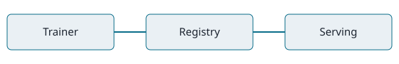

Обзор
Orbita ML — вымышленная платформа для обучения, версионирования и запуска ML-моделей. Здесь описаны установка, настройка, руководства и REST API.

Trainer запускает обучение, Registry хранит версии моделей, Serving отдаёт предсказания по REST. С чего начать: установка.